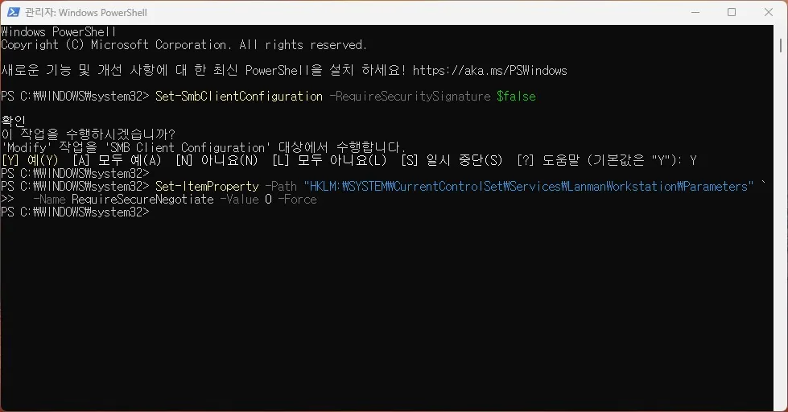

네트워크
네트워크 드라이브 연결 오류 원인과 점검 순서
연결된 네트워크 드라이브에 접근되지 않거나 재부팅 후 매핑이 사라지는 경우
네트워크 드라이브 오류는 자격 증명 만료, 네트워크 검색 설정, SMB 프로토콜 버전 불일치, 로그인 시 재연결 실패 중 하나인 경우가 대부분입니다. 증상이 처음 발생한 시점(Windows 업데이트 이후인지, 비밀번호 변경 이후인지)을 먼저 떠올리면 원인을 빠르게 좁힐 수 있습니다.
Windows 10/11은 기본적으로 SMB1 프로토콜을 비활성화하고 있어, 구형 NAS나 서버에 접근할 때 이 설정 때문에 연결이 안 되는 사례가 늘고 있습니다.
이 가이드가 필요한 상황
- 재부팅 후 네트워크 드라이브 문자(Z: 등)가 사라져 있다.
- 탐색기에서 네트워크 드라이브를 열면 접근 거부 또는 경로 없음 오류가 난다.
- 특정 시점부터 NAS나 공유 폴더에 연결이 안 된다.
- 네트워크 드라이브를 열 때 탐색기가 잠시 멈췄다가 오류를 낸다.
먼저 확인할 항목
- 네트워크 검색 및 공유 설정 확인 — 설정 → 네트워크 및 인터넷 → 고급 네트워크 설정 → 고급 공유 설정에서 현재 연결된 프로파일(개인 또는 도메인)의 네트워크 검색과 파일 공유를 켭니다.
- 자격 증명 관리자 점검 — 제어판 → 자격 증명 관리자 → Windows 자격 증명에서 해당 서버나 NAS의 항목을 찾아 삭제하고, 네트워크 드라이브에 다시 접근해 자격 증명을 새로 입력합니다.
- 드라이브 재매핑 옵션 확인 — 탐색기에서 네트워크 드라이브 연결 시 '로그온 시 다시 연결'과 '다른 자격 증명 사용' 옵션을 모두 체크합니다.
- ping으로 서버 응답 확인 — 명령 프롬프트에서 ping [서버 IP 또는 이름]을 실행해 네트워크 자체가 연결되는지 먼저 확인합니다.
원인을 더 정확히 나누는 방법
오류 코드로 원인 구분
0x80070035(네트워크 경로를 찾을 수 없음)는 네트워크 검색 설정 문제, 0x80070005(액세스 거부됨)는 자격 증명 문제, 0x80004005(지정되지 않은 오류)는 SMB 버전 불일치인 경우가 많습니다.
구형 NAS·서버 연결 시
SMB1 프로토콜만 지원하는 구형 장치라면 Windows 기능 켜기/끄기에서 'SMB 1.0/CIFS 파일 공유 지원'을 활성화해야 합니다. 단, SMB1은 보안 취약점이 있으므로 장기적으로는 장치 펌웨어 업데이트나 교체를 권장합니다.
시스템 오류 1208이 뜰 때
SMB1이 아닌데도 구형 NAS·공유 폴더에 연결하면 "시스템 오류 1208이 발생했습니다"가 뜨는 경우가 있습니다. 이는 Windows의 SMB 보안 협상(Secure Negotiate) 요구 수준과 장치가 지원하는 수준이 맞지 않을 때 나타납니다. 관리자 권한 PowerShell에서 아래처럼 클라이언트 쪽 서명 요구를 잠시 낮춰 연결되는지 확인할 수 있습니다.

이 설정은 클라이언트의 보안 요구 수준을 낮추는 것이므로, 신뢰할 수 있는 내부 네트워크 장치에 한해 임시로만 사용하고 연결을 확인한 뒤에는 반드시 원래 값으로 되돌리세요.
확인 결과에 따른 다음 단계
- 자격 증명 삭제·재입력 후 해결될 때 — 비밀번호 변경 후 저장된 자격 증명이 갱신되지 않은 것이 원인입니다. 이후 비밀번호 변경 시에는 자격 증명 관리자도 함께 업데이트하세요.
- 재부팅 후 드라이브가 계속 사라질 때 — 로그인 시 네트워크가 아직 준비되지 않아 연결에 실패하는 경우입니다. 작업 스케줄러에서 로그인 후 일정 시간 뒤에 드라이브를 재연결하는 스크립트를 등록하는 방법을 고려하세요.
- SMB1 활성화 후 연결될 때 — 장치가 구형 프로토콜만 지원하는 것입니다. 장치 제조사의 펌웨어 업데이트로 SMB2 이상을 지원하도록 업그레이드하는 것이 장기적으로 안전합니다.
자주 묻는 질문
- 재부팅 후 네트워크 드라이브가 사라지는 이유는? '로그온 시 다시 연결' 옵션이 체크되지 않았거나, 로그인 전에 네트워크가 준비되지 않아 연결에 실패하는 경우입니다. 드라이브를 다시 매핑할 때 해당 옵션을 체크하세요.
- 0x80070035 오류가 뜨면? 네트워크 검색이 꺼져 있거나 네트워크 프로파일이 공용으로 설정된 경우입니다. 고급 공유 설정에서 개인 네트워크의 네트워크 검색과 파일 공유를 켜세요.
최종 검토일: 2026-09-24